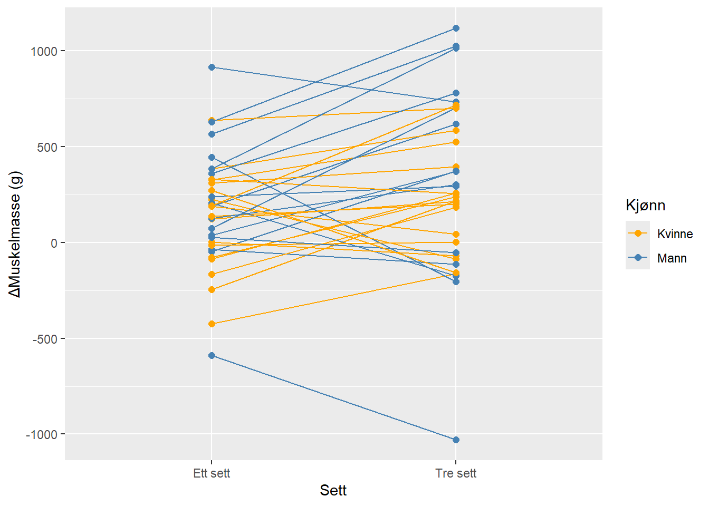
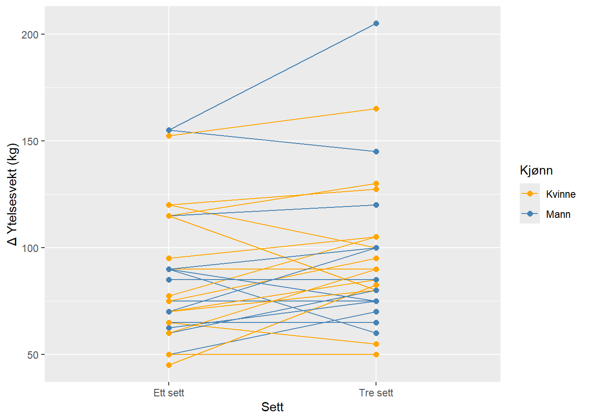

| Alder (År) | Høyde (cm) | Vekt (kg) | |
|---|---|---|---|
| Kvinne n = 18 | 22 (1.3) | 167.7 (6.9) | 64.4 (10.4) |
| Mann n = 16 | 23.6 (4.1) | 182.9 (5.9) | 75.8 (10.7) |
| Alle verdier er gjennomsnitt og standardavvik. | |||
5 Assignment 5: Effekter av ulikt treningsvolum på muskelhypertrofi og muskelstyrke
1 Introduksjon
I dagens samfunn er det i stor grad enighet om at styrketrening er viktig for god helse. Befolkningen trender mot en mindre aktiv livsstil, samtidig som man blir eldre og eldre. Etter fylte 50 år, viser studier at man taper et sted mellom 5 og 10 % muskelmasse årlig, som tilsvarer ~ 0.4 kg (Westcott 2012). Tilstander som aldersrelatert muskeltap, diabetes type II, hjertesykdom, redusert beinmasse og økende grad av fettmasse ses hyppigere og hyppigere. Ved sykdom ser en høy grad av inaktivitet som igjen leder til tap av muskelmasse, redusert metabolsk respons, økt fettmasse og andre liknende tilstander. Aerob aktivitet er for tiden veldig populært blir i stor grad anbefalt for å motvirke utvikling av disse tilstandene, men hva gjelder så styrketrening? (Westcott 2012)
Styrketrening kan defineres som trening med mål om å bli sterkere, forebygge skader, fremme prestasjon eller trening med mål om å øke muskelmasse (Stone, Stone, and Sands 2007). Noen definerer volum som den viktigste faktoren for å se endringen på cellenivå, mens andre mener at høyintesiv trening kan gi samme effekten (Santana, Castro, and Cavaglieri 2021). Radaelli et al. (2024) ser at lavintensiv trening også kan ha god effekt for å øke muskelmasse og styrke i underekstremiteter blant eldre individer (\(\geq\) 60 år) (Radaelli et al. 2024). Antall sett, antall repetisjoner og motstanden det trenes på benyttes for definere volumet av trening, mens intensiteten på treningen ofte defineres som en prosentandel av én maksimal repetisjon (1RM). For mange er tidsklemma en problem i hverdagen og flere er trolig interessert i å vite hvor lite trening som skal til for å oppnå ønsket stimuli av treningen man gjennomfører. (Santana, Castro, and Cavaglieri 2021)
I denne studien er det ønskelig å se nærmere på hvorvidt volumet av styrketrening er av betydning for økning av muskelmasse og muskelstyrke.
2 Metode
2.1 Utvalg og studieoversikt
I studien ble det rekruttert 41 individer, menn (n = 19) og kvinner (n = 22). For å bli inkludert i studien måtte man kunne få lokal anestesi, ikke ha trent mer enn én styrkeøkt i uken siste året, ikke ha nedsatt eller påvirket muskelstyrke grunnet tidligere eller nåværende skade og ikke innta medisin som kan påvirke treningsadaptasjon. Etter gjennomført treningsintervensjon ble 7 deltakere ekskludert fra dataanalysen da de ikke oppfylte kravene om gjennomføring av intervensjon. Table 5.1 viser en oversikt over antall kvinner og menn som er inkludert i analysering av data og deres respektive gjennomsnittlige karakteristikker. Deltakere som ble inkludert i analysen hadde alle tidligere erfaring med idrett.
2.2 Spesifikke beskrivelser av testmetode
Intervensjonen varte i 12 uker og bestod av helkropps styrketrening. Beinøvelser ble gjennomført unilateralt. De ble tilfeldig trukket hvilket bein som skulle gjennomføre ett sett (single set) og hvilket som skulle gjøre tre sett (multiple sets).
2.3 Styrketreningsprotokoll
Treningsøktene startet med en standardisert oppvarming som besto av (i) ergometer-sykling i 5 minutter (RPE 12–14), (ii) øvelser med kroppsvekt med 10 repetisjoner av push-ups, sit-ups, ryggekstensjon og knebøy, og til slutt (iii) et sett med 10 repetisjoner på ~ 50 % av 1RM for hver styrkeøvelse i intervensjonen.
Beinøvelsene ble gjennomført i følgende rekkefølge: ettbeins beinpress, leg curl og kneekstensjon. Single settene ble gjennomført mellom andre og tredje sett for multiple settene. Treningsintensiteten økte gjennom intervensjonen. Det ble trent 10RM første to ukene, 8RM de neste tre ukene og 7RM de siste syv ukene. For å gjøre treningen mer gjennomførbar for deltakerne, ble noen av øktene gjennomført uten tilsyn. Deltakerne ble da bedt om å føre detaljert logg. Fra den niende treningsøkten, ble én av de tre ukentlige øktene gjennomført på 90 % av intensitet, mens tiltenkt volum skulle opprettholdes. Det skulle være minimum 48 timer mellom hver fullintensitetsøkt og minimum 24 timer mellom submaksimale økter (90 %). For å sikre restitusjon, ble hver deltaker tildelt en drikk som innehold 0.15 \(\frac{g}{kg}\) protein, 11.2 \(\frac{g}{kg}\) karbohydrat og 0.5 \(\frac{g}{kg}\) fett.
2.4 Muskulær Styrkevurdering
Muskelstyrke ble vurdert ved hjelp av en dynamometer for å måle isokinetisk og isometrisk styrke. Deltakerne ble kjent med testprosedyrer og fikk flere forsøk på hvert nivå for å sikre nøyaktighet. En repetisjon maksimum (1RM) ble testet for unilateral beinpress og kneekstension, der testene ble forberedt med spesifikke oppvarmingssett.
2.5 Måling av Kroppssammensetning og Mager Muskelmasse
Kroppssammensetning ble vurdert med dual-energy X-ray absorptiometri (DXA). Deltakerne ble instruert om å faste og unngå intensiv trening før målingene.
2.6 Dataanalyse og Statistikk
Utvalgsstørrelsesberegninger indikerte at 40 deltakere var tilstrekkelig for å oppdage meningsfulle forskjeller. Lineære blandede modeller (LMM) ble benyttet for å analysere endringer i muskelhypertrofi og styrke. Alle analyser ble utført i R, med signifikansnivå satt til α = 0,05.
De statistsike analysene hadde som mål å avdekke effekten av forskjellige motstandstreningsvolumer på muskelstyrke og hypertrofi.
3 Resultater
3.1 Treningsvolums effekt på mager muskelmasse i underekstremitetene
Etter den 12 uker lange styrketreningsintervensjonen er den prosentvise økningen i mager muskelmasse for benet som trente tre sett 3.25% og for det som trente ett sett 1.9%. Den gjennomsnittlige forskjellen i mager muskelmasse i beina mellom de to treningsvolumene (ett sett vs. tre sett) var 122.8 g (95% CI: [8.6, 237.0], p-value = 0.036, t33 = 2.19).
Benytter man en blandet modell som tar man høyde for hver deltaker sine pre-verdier, og ser på hvordan antall sett påvirker mager muskelmasse etter treningsintervensjonen, blir den gjennomsnittlige endringen i mager muskelmasse mellom ett og tre sett 122.7 g (95% CI: [10.9, 234.5], p-value = 0.037, t32.8 = 2.18).
Figure 5.1 viser endringen i mager muskelmasse målt i gram for de ulike deltakerenes bein. Linjen som er trukket mellom punkt viser hver deltakers resultat og gir et inntrykk av forskjellen mellom effekten av treningsvolum på muskelmasse. Tre sett virker av figuren å ha større effekt for å øke muskelmasse, sammenliknet med lavere treningsvolum.

3.2 Treningsvolums effekt på kraftutvikling i underekstremitetene
Den gjennomsnittlige prosentvise økningen i ytelsesvekt ved 1RM (målt i kg) for henholdsvis tre og ett sett var 36.89 og 34.15. Den gjennomsnittlige forskjellen i ytelsesvekt mellom beina ved de ulike treningsvolumene (ett sett vs. tre sett) var 7.8 kg (95% CI: [1.1, 14.6], p-value = 0.025, t30 = 2.36).
Benytter man en blandet modell der man tar høyde for hver deltaker sine pre-verdier, og ser hvordan antall sett påvirker ytelsesvekt etter treningsintervensjonen, blir den gjennomsnittlige endringen i ytelsesvekt mellom ett og tre sett 8.4 kg (95% CI: [1.9, 15], p-value = 0.017, t30.5 = 2.53).
Figure 5.2 viser endringen i den maksimale ytelsesvekten deltakerne evnet å presse ved 1RM for henholdsvis de som trente ett og tre sett. Av figuren ser man en tendens til at høyere treningsvolum gir større evne til å yte mer på øvelsen beinpress.

4 Diskusjon
I tråd med tidligere forskning, som har undersøkt effekten av treningsvolum på muskelmasse og styrke (Stone, Stone, and Sands 2007), (Santana, Castro, and Cavaglieri 2021), viser denne studien at høyere volum (tre sett) har en tendens til å føre til større muskelvekst og styrkeøkning enn lavere volum (ett sett). Dette styrker ideen om at volum kan være en viktig faktor for å oppnå optimal muskelhypertrofi og styrkeutvikling.
I en større kontekst, spesielt i forhold til aldersrelatert muskeltap, er det viktig å påpeke at forskning viser at personer over 50 år mister 5–10 % av muskelmassen årlig (Westcott 2012). Studien antyder at styrketrening kan være et effektivt tiltak for å motvirke eller bremse dette tapet av muskelmasse. Dette er særlig relevant for eldre voksne, og andre individer, som er lite aktive eller har begynt å trene styrke for første gang.
Studien er dog gjennomført på yngre individer, som tidligere har drevet med idrett (se Table 5.1). Det kan av den grunn være misvisende å trekke paralleller til en populasjon med andre forutsetninger. På en annen side hadde deltakerne i studien trent lite til ingen styrke det siste året. Av den grunn kan en anta at treningseffekten en ser vil være tilstede for andre individer med tilsvarende treningsbakgrunn, uavhengig av alder.
I denne studien med unge utøvere så en frafall underveis i intervensjonen. En kan anta at dette skyldes at treningsmengden blir for høy i forhold til hva kroppen er vant til, noe som kan føre til skader eller andre utfordringer. Dersom en står ovenfor ulike helseutfordringer, kan det være utfordrende å utføre flere sett per øvelse, og derfor kan den praktiske anvendelsen av tre sett være utfordrende. I lys av dette kan det være relevant å vurdere om ett sett også gir tilstrekkelig stimuli for muskelforbedring i populasjoner med begrensede ressurser.
Intensiteten (70–90 % 1RM) brukt i denne studien er i tråd med anbefalingene for både muskelstyrke og hypertrofi (Santana, Castro, and Cavaglieri 2021). Imidlertid kunne det vært interessant å undersøke om lavere intensitet på treningen kombinert med høyere volum kunne ha hatt en like god effekt på muskelmasseøkning for denne gruppen.
En langtidsoppfølging av deltakerne etter at treningsintervensjonen er avsluttet, kan gi mer informasjon om hvordan treningsvolum påvirker vedlikehold av muskelmasse og styrke i lengden. Hvordan deltakerne vedlikeholder gevinster over tid kan være viktig for å vurdere praktisk anvendbarhet av treningsvolumet som en strategi for å bevare helsen.
Ved å benytte en blandet modell (ANCOVA) i tillegg til t-test får man en modell som tar hensyn til individuell variasjon. Modellen tar høyde for at hver deltaker har ulike pre-verdier og at de responderer ulikt gjennom intervensjonen. Ved å gi hver deltaker sin egen startverdi, kan man mer presist vurdere og isolere effekten av treningsintervensjonen (ett sett vs tre sett).
5 Konklusjon
Treningsvolum og intensitet virker å være viktige parametre for å øke muskelmasse og muskelstyrke. Tre sett med styrkeøvelser synes å gi en større tilpasning enn kun ett sett med øvelser. De langsiktige effektene av denne treningsmodellen bør undersøkes nærmere, i tillegg til om de samme effektene av treningsvolum kan observeres i andre deler av befolkningen.
Radaelli, Régis, Anderson Rech, Talita Molinari, Anna Maria Markarian, Maria Petropoulou, Urs Granacher, Tibor Hortobágyi, and Pedro Lopez. 2024. “Effects of Resistance Training Volume on Physical Function, Lean Body Mass and Lower-Body Muscle Hypertrophy and Strength in Older Adults: A Systematic Review and Network Meta-Analysis of 151 Randomised Trials.” Sports Med., October.
Santana, Davi Alves de, Alex Castro, and Cláudia Regina Cavaglieri. 2021. “Strength Training Volume to Increase Muscle Mass Responsiveness in Older Individuals: Weekly Sets Based Approach.” Front. Physiol. 12 (September): 759677.
Stone, Michael H, Meg Stone, and William A Sands. 2007. Principles and Practice of Resistance Training. Human Kinetics.
Westcott, Wayne L. 2012. “Resistance Training Is Medicine: Effects of Strength Training on Health.” Curr. Sports Med. Rep. 11 (4): 209–16.